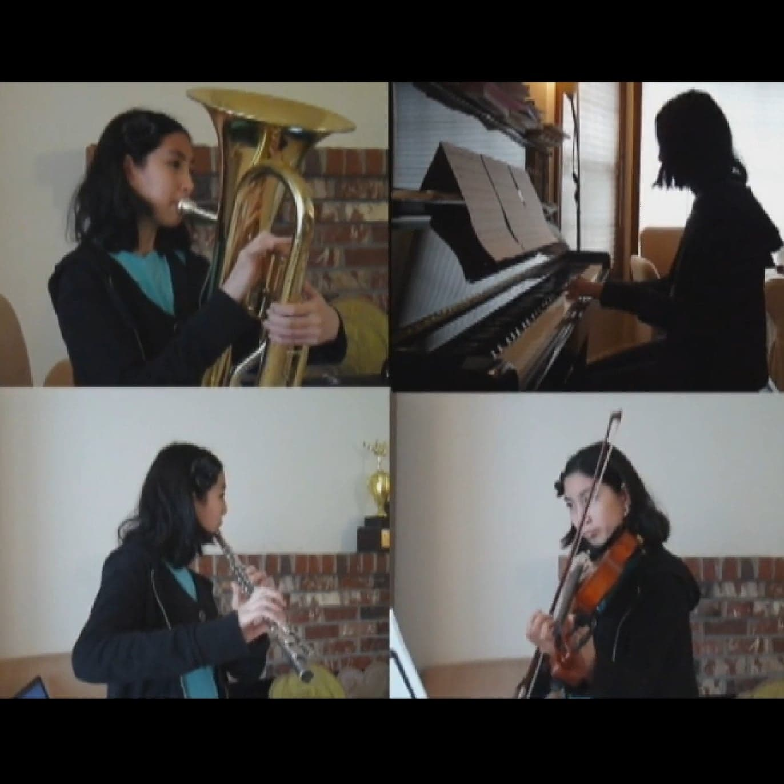

Music
My foray into music begun with piano and violin lessons as a child. I continued pursuing music until the end of high school as an active participant in the school orchestra, band and choir. In my free time, I upload music covers and use music as a way to relax.